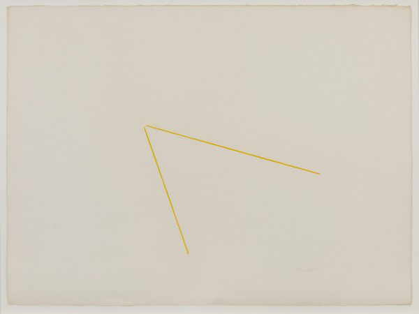
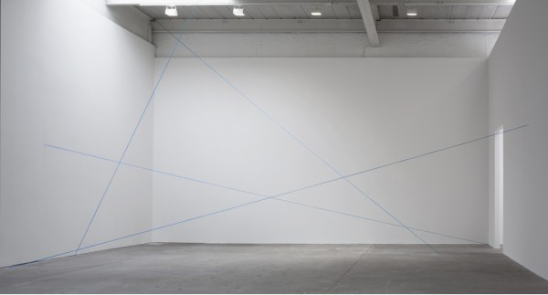

-
Playing Out the String
by Brian Dupont April 10, 2012
After the overwhelming noise and bustle that is the New York art world during Armory week, the Fred Sandback exhibit Decades at Zwirner is initially a calming exercise in looking and letting the work slowly articulate its own position, describing and defining the gallery space with the thinnest of means. The historical patina is countered by the vibrancy of color in new yarn, the impossibility of artists today working in a similar vein is intruded on by the realities of physical space. The title of the show reflects a conceit of presenting a selection of work from 1968 to 20001, spanning each decade in which the artist worked. This creates a show akin to a small retrospective, presenting a progression through time that lays out the artist’s achievement, but also allows the work to compare to contemporary offerings.
In a most basic sense the work is historical, rooted in a minimalist reading of phenomenology that is not readily available to artists today.2 Any seismic shift in art practice usually leaves the first people on the scene as the protean figures that have to be responded to, but later duplication of their concerns is foolish. The art that evolved in around the modernist endpoint projected in the 60’s and 70’s has already been thoroughly explored; to rework that ground without a trace of irony would be to offer nothing new to an art world (and market) obsessed with novelty. In exploring a contemporary interpretation of Sandback’s work, the value lies in understanding how his practice is shifting in interpretation.
Sandback’s polish of installation3 was based on an economy of means both spartan and flexible. While it is valid to point out that a blue chip installation is more likely to achieve these results, part of Sandback’s genius is the economy with which he started his project, and the attention to detail that was always there. Yarn elegantly tapers into a point where it disappears into floor, wall, or ceiling, but multiple strands in a single vector add weight so that instead of simple grouping of lines in space, a Sandback sculpture is constituted by an organization of incredibly extended objects, grouped or identified by color, and bounded by the same space the viewer inhabits. A key detail is the endpoints of his vectors: they disappear into wall, floor, or ceiling with an elegant taper4 and no hint of hardware or clue to how the trick is accomplished.5 His formal drawings with pastel give the same effect. The lines have a density of color that extends through the length of the form and then disappear almost into the paper the way yarn disappears into a wall. These drawings in the show (the group of 16 variations in black from 1974 and the single sheet with 2 chrome yellow lines from 1972) also do not give away their secrets anymore than the sculptures do, but more notational works (often on lined legal paper) elucidate the intention of the artist to prescribe a division of space or a relation in three dimensions.
Reading his articulation of space is different now than it must have been for previous viewers. Sandback’s work requires an empty space to function most effectively6 ; like the proverbial beam of light, any otherwise noticeable mass in the form of another painting or sculpture would distort the gravitational field of our attention and disturb Sandback’s carefully calibrated arrangements. Consider the corresponding distillation of the modern gallery space to white cube: the removal of ornament from the interior architecture provided a tabula rasa for viewing the work of art, but Sandback turns that lack of inflection and muting of detail on its ear by dissecting and exploring the resulting space. In a sense his sculpture is the entire gallery space, transformed by his simple addition of strands of yarn.
Many of the works in the exhibit are described as “Situational: spatial relationships established by the artist; overall dimensions vary with each installation.” In controlling and manipulating the entire gallery space, artists like Sandback7 laid the groundwork for more rigorous critique of the support structure of art and the art world. The first step was to remove the work from the gallery, or make the structure of the work indistinguishable from the structure of the gallery; it levels a strictly formal critique, that was soon followed by more detailed assessments of the underlying politics and economics. The first relational aesthetics were abstract.
The downside to envisioning one’s situations in a commercial gallery is that the details of the space one is transforming are likely housed in a much larger and hard to control city. While the installation of the individual pieces at Zwirner is fantastic, the attempt to shut out the outside world becomes apparent in the smallest details that slip through. Traces of the installation (dust where concrete floor has been drilled out), noise from a busy street just outside a garage door, or the infernal hum of a laser printer all sabotage the pure spatial relationships Sandback outlined. The Gallery’s website and installation photos trumpet the unexpected relationships and views, but the question is how would the artist intend these juxtapositions8 , and how are they manufactured within the space that he would turn into his sculpture? For all the precision and interest generated by the individual works, the various areas feel hollow, and the interactions contrived and stretched too thin.
The crux of the comparison is revealed in the recreation of work from Galerie Heiner Friedrich, Munich that has been faithfully abstracted9 within Zwirner. A sample of drawings chronicle Sandback’s engagement with the space, which last many years; it must have been comforting for an artist who relied on a specific architectural location to supply his work’s structure to have a home of sorts that he could work from. He tested projects and laid out variations, actively engaging with the proportions and relations of those rooms. The installation presumably gives an accurate reading of the actual, original work, a difficult trick for an artwork that was essentially site-specific. The ultimate failing is that the space is only a simulacrum of the original, and so much of Sandback’s work (and that of his peers) did respond to the actual spaces they worked with; while the effect is to present a work that would otherwise be lost, the compounding layers of abstraction neuters Sandback’s engagement. The spaces that are subject to Sandback’s division are as devoid of interaction as is an artist who has passed. It is a wonderful respite, but eventually one must walk out the door onto the loud and noisy street and get on with new engagements. The look back is worth it, though.
Fred Sandback: Decades is on view through April 21at David Zwirner, 519 West 19th Street, New York.
- Although the show just squeaks by on its own organizing principle, including single works from the end of the ‘60s and 2000 to cover the spread. While these works (‘Untitled (Vertical Two-part Corner Piece)’ and ‘Untitled’ (from 2000) relate to the Sandback’s broader oeuvre, they are a bit out of place given the otherwise cohesive nature of the drawings and spatial constructions with acrylic yarn. They appear to have been added later, and the show would be no poorer if a work that is literally stuck in a back corner were omitted at the cost of an easy framing device. [↩]
- Or more accurately artists who are developing materials and ideas of their practice toady; the artists who are finishing their careers now who pioneered this mode of work are obviously still entitled (if not expected) to work in that vein. [↩]
- Or in this case, the executors of his estate and the gallery’s installers. [↩]
- In the later works on view, Four Part Mikado Construction and the Twelve Part Vertical Construction. This unmistakably adds to their status as object, and reinforces the precision of the earlier single-strand works. [↩]
- Think about the delicate technical invention required for a moment. The Yarn must be stretched taut and held in place with no visible means; not even a smear of glue where the yarn disappears into a hole in the concrete floor. Any holes in the architecture are precisely placed and sized to unerringly accept only the stretch of yarn Sandback envisioned, and the yarn is always pristine from end to end. There is a subtlety of understanding one’s materials, even if they are otherwise fairly common, that is not often acknowledged. [↩]
- The genius of the Dia Beacon installation lies in its ability to isolate Sandback’s work from its neighbors while still linking it to the broader installation and making the entirety easily available. [↩]
- In this regard I would point to makers of earth-works like Smithson or Heizer, as well as conceptualists like LeWitt or Bochner, as artists who made work that would challenge the supposed interchanagability of the white cube, by focusing on the minute specificity of individual iterations. [↩]
- Again, look to the planning of the Dia installation. [↩]
- Lighting and ceiling height are simultaneously managed by an elegant stretch of scrim, but the floor remains industrial concrete (where I suspect the original had hardwood or perhaps even a rather sensible carpet) and there are no fixtures or other indication of a real, occupied space. It is the ghost of a shell. [↩]